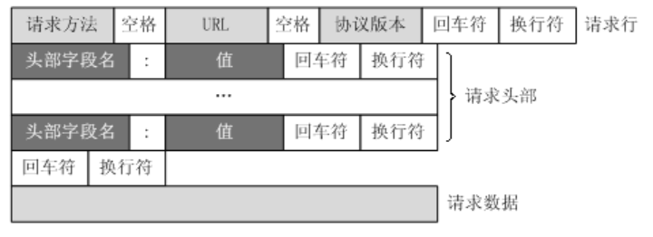
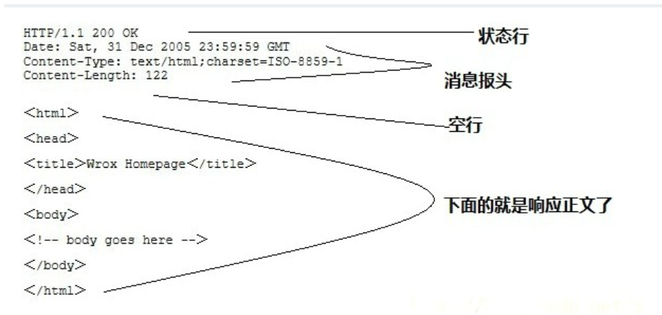

HTTP协议笔记
虽然http在计网里学过一次了但是没有做笔记，最近因为在题目见到了用libmicrohttpd写的程序，故在此复习整理一波。
（还不太完善，后面有空补…）
超文本传输协议HTTP（HyperText Transfer Protocol）是一种用于分布式、协作式和超媒体信息系统的应用层协议。HTTP是万维网的数据通信的基础。
HTTP协议
HTTP的特性
-
HTTP 协议构建于 TCP/IP 协议之上，是一个应用层协议，默认端口号是 80
-
HTTP 是无连接无状态的
无连接指的是限制每次连接只处理一个请求。服务器处理完客户的请求并收到客户的应答后即断开连接。因为采用这种方式可以节省传输时间
无状态指的是协议对于事务处理没有记忆能力。缺少状态意味着如果后续处理需要前面的信息，则它必须重传，这样可能导致每次连接传送的数据量增大。另一方面，在服务器不需要先前信息时它的应答就较快。
HTTP请求
GET: 请求获取Request-URI所标识的资源
POST： 在Request-URI所标识的资源后附加新的数据
HEAD：请求获取由 Request-URI 所标识的资源的响应消息报头
PUT： 请求服务器存储一个资源，并用Request-URI作为其标识
DELETE：请求服务器删除Request-URI所标识的资源
OPTIONS：请求查询服务器的性能，或者查询与资源相关的选项和需求
TRACE：请求服务器回送收到的请求信息，主要用于测试或诊断
CONNECT：隧道机制
HTTP状态响应码
- 1XX（信息性状态码）：表示接收的请求正在处理。
- 2XX（成功状态码）：表示请求正常处理完毕。
- 3XX（重定向状态码）：需要后续操作才能完成这一请求。
- 4XX（客户端错误状态码）：表示请求包含语法错误或无法完成。
- 5XX（服务器错误状态码）：服务器在处理请求的过程中发生了错误。
HTTP的所有状态响应码可以在这里查看：https://www.runoob.com/http/http-status-codes.html
这里列出几个常见的响应码：
| 状态码 | 状态码英文名称 | 描述 |
|---|---|---|
| 200 | OK | 请求成功，一般用于GET 和POST请求 |
| 204 | No Content | 无内容。服务器成功处理，但未返回内容。在未更新网页的情况下，可确保浏览器继续显示当前文档 |
| 206 | Partial Content | 是对资源某一部分的请求，服务器成功处理了部分GET请求，响应报文中包含由Content-Range指定范围的实体内容。 |
| 301 | Moved Permanently | 永久性重定向。请求的资源已被永久的移动到新URI，返回信息会包括新的URI，浏览器会自动定向到新URI。今后任何新的请求都应使用新的URI代替 |
| 302 | Found | 临时性重定向。与301类似。但资源只是临时被移动。客户端应继续使用原有URI |
| 303 | See Other | 查看其他地址。与302类似。使用GET请求查看 |
| 304 | Not Modified | 未修改。所请求的资源未修改，服务器返回此状态码时，不会返回任何资源。客户端通常会缓存访问过的资源，通过提供一个头信息指出客户端希望只返回在指定日期之后修改的资源 |
| 307 | Temporary Redirect | 临时重定向。与302类似。使用GET请求重定向，会按照浏览器标准，不会从POST变成GET。 |
| 400 | Bad Request | 客户端请求报文中存在语法错误，服务器无法理解。浏览器会像200 OK一样对待该状态吗 |
| 401 | Unauthorized | 请求要求用户的身份认证，通过HTTP认证（BASIC认证，DIGEST认证）的认证信息，若之前已进行过一次请求，则表示用户认证失败 （未认证） |
| 402 | Payment Required | 保留，将来使用 |
| 403 | Forbidden | 服务器理解请求客户端的请求，但是拒绝执行此请求 |
| 404 | Not Found | 服务器无法根据客户端的请求找到资源（网页）。通过此代码，网站设计人员可设置"您所请求的资源无法找到"的个性页面。也可以在服务器拒绝请求且不想说明理由时使用 |
| 500 | Internal Server Error | 服务器内部错误，无法完成请求，也可能是web应用存在bug或某些临时故障 |
| 501 | Not Implemented | 服务器不支持请求的功能，无法完成请求 |
| 503 | Service Unavailable | 由于超载或系统维护，服务器暂时的无法处理客户端的请求。延时的长度可包含在服务器的Retry-After头信息中 |
HTTP请求报文
HTTP 协议是以 ASCII 码传输，建立在 TCP/IP 协议之上的应用层规范。规范把 HTTP 请求分为三个部分：请求/状态行、请求/响应头、消息主体。
大概结构如下：
1 | <method> <request-URL> <version> |
客户端请求消息
-
请求行：
- 方法：例如GET、POST、PUT、DELETE等，指定要执行的操作
- 请求URI（统一资源标识符）：请求资源的路径，通常包括主机名、端口号、路径和查询字符串
- HTTP版本：例如HTTP/1.1
一个请求行的格式示例：
1
GET /index.html
-
请求头：
- 包含客户端环境信息、请求体的大小（如有）、客户端支持的压缩类型等
- 常见的请求头有Host、User-Agent、Accept、Accept-Encoding、Content-Length等
-
空行：
- 请求头和请求体之间的分隔符，表示请求头的结束
-
请求体（可选）
- 在某些类型的请求中会需要发送数据给服务器，这些数据就通过请求体发送给服务器，例如：POST、PUT
一个完整的请求报文示例如下：
1 | POST / |
服务器响应消息
-
状态行：
- HTTP版本：与请求报文中HTTP版本相匹配
- 状态码：三位数，表示请求的处理结果，状态码的具体表示见前面对状态响应码的说明
- 状态信息：状态码的简短描述
状态行的格式示例：
1
200 OK
-
响应头：
- 包含服务器环境信息、响应体大小、服务器支持的压缩类型等
- 常见响应头有：Content-Type、Content-Length、Server、Set-Cookie等
-
响应体（可选）：
- 包含服务器返回的数据，如请求的网页内容、图片、JSON数据等，如果没有要返回的数据就没有响应体
一个完整的http响应报文示例如下（对应上面的请求报文）：
1 | 200 OK |
常见请求头与响应头
给个链接：https://blog.csdn.net/hannah2233/article/details/125911821
HTTP跨域问题
跨域请求的定义：
- 协议不同，例如http与https
- 域名不同
- 端口不同
常见的跨域问题如下图所示：
| 当前页面url | 被请求页面url | 是否跨域 | 原因 |
|---|---|---|---|
| http://www.test.com/ | http://www.test.com/index.html | 否 | 同源（协议、域名、端口号都相同） |
| http://www.test.com/ | https://www.test.com/index.html | 是 | 协议不同（http/ https） |
| http://www.test.com/ | http://www.baidu.com/ | 是 | 主域名不同（test/ baidu） |
| http://www.test.com/ | http://blog.test.com/ | 是 | 子域名不同（www/ blog） |
| http://www.test.com:8080/ | http://www.test.com:7001/ | 是 | 端口号不同（8080/ 7001） |
在前后端分离的应用中，可以在本地通过http与应用进行交互，比如说在本地启动一个项目的前端和后端，假设前端项目占用端口8080，后端项目占用端口9090，这个时候使用前端项目访问后端的端口，由于端口不一样，因此属于跨域请求，在浏览器上会被拦截。
如何解决跨域问题？
跨域问题本质上是浏览器为了保证用户的访问安全，方式恶意网站窃取用户数据而进行的拦截操作，因此要解决跨域问题需要告诉浏览器这是一个正常的安全的请求。
在返回的响应头中设置Access-Control-Allow-Origin参数可以解决跨域问题，这个参数是用来表示允许跨域访问的原始域名，当它设置为 * 的时候，就表示允许所有站点跨域访问。因此对于不同的后端服务器来说，只需要通过各种手段想办法给返回的请求添加一个Access-Control-Allow-Origin 的响应头，就能解决跨域问题。
libmicrohttpd库
libmicrohttpd 是 GUN 下开源的一个小型的 HTTP 库，能够方便的嵌入到系统中。支持 HTTP 1.1 可以同时侦听多个端口，具有 select, poll, pthread, thread poo 等多种模式，库平台支持 GNU/Linux, FreeBSD, OpenBSD, NetBSD, Android, Darwin (macOS), W32, OpenIndiana/Solaris, z/OS 等。
libmicrohttpd库的相关接口和使用介绍
1 | *********************** Main API *************************** |
一个简单示例（GET请求）
1 |
|
这个示例的效果为访问服务器返回一个简单的页面，页面的内容为PAGE宏定义。
从上面的代码中可以看出libmicrohttpd的使用流程：
MHD_start_daemon函数启动服务，并需要一个回调参数ahc_echo，这个方法是非阻塞的，在这个示例中使用getc函数等待用户输入的终止。
ahc_echo回调函数在每次请求的时候都会进入。使用MHD_create_response_from_buffer函数创建一个响应结构体，然后使用MHD_queue_response函数把响应结构推入响应队列，libmicrohttpd会帮我们执行相应。最后再使用MHD_destroy_response清理内存。
这个简单的实例只能够处理GET请求，POST请求的实现还要更为复杂。
在libmicrohttpd中解决跨域问题
在前面对跨域问题的介绍中，我们已经知道了跨域问题的原理。
浏览器在发送POST请求之前首先会进行一次OPTION请求，OPTION请求返回的头部信息会决定浏览器是否拦截该请求，关键的头部信息包括下面三个：
1 | Access-Control-Allow-Origin |
因此在使用libmicrohttpd处理请求的时候可以在请求处理回调函数中先处理一次OPTION请求，示例如下：
1 | response = MHD_create_response_from_buffer(strlen(METHOD_ERROR), |
这样http服务就能处理跨域请求了。
POST请求
POST参数获取
libmicrohttpd支持下面两种格式的POST请求：
1 |
libmicrohttpd 不支持 application/json 格式的 post 请求
一个能处理POST请求的服务完整示例：
1 | /** |
当 POST 请求数据量比较大时，请求回调函数 handle_request 是会进入多次来接收数据的。
因此这里使用了一个结构体 Request 并使用 post_data 字段来存储 POST 请求数据，每次进入时拼接起来，当 0 == *upload_data_size 时就证明数据接收完毕了。
参考资料
https://blog.csdn.net/Frankiehp/article/details/113615412